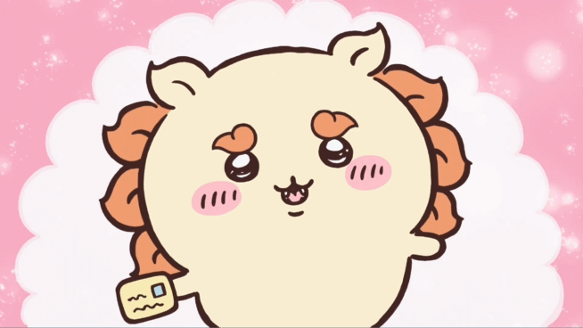

Transformaciones, transiciones y animaciones
Acción táctil
Desactiva los gestos táctiles del navegador, como scroll y zoom, para gestionarlos por código.
Transformaciones
Gira el elemento cuarenta y cinco grados; en v4 ya no hace falta añadir transform.
Escalado
Escala el elemento al ciento cincuenta por ciento de su tamaño sin alterar el espacio que ocupa.
Rotación
Gira el elemento noventa grados en sentido horario, útil para flechas, iconos y textos verticales.
Sesgado
Inclina el elemento seis grados en el eje horizontal, deformándolo en paralelogramo.
Traslación
Desplaza el elemento 1rem a la izquierda sin modificar el flujo del documento.
Origen de la transformación
Fija el centro del elemento como punto de transformación, que es el comportamiento por defecto.
Origen de transformación X
Fija el borde izquierdo como punto fijo de rotaciones y escalados.
Origen de transformación Y
Fija el borde superior como punto fijo de rotaciones y escalados.
Origen de transformación Z
Fija el borde inferior como punto fijo de rotaciones y escalados.
Estilo de transformación
Permite que los hijos conserven su posición en el espacio tridimensional, necesario para volteos con profundidad.
Caja de transformación
Define la caja de borde como referencia para calcular las transformaciones.
Perspectiva
Establece una perspectiva de 500px para los hijos 3D; menor valor significa más profundidad.
Origen de perspectiva
Sitúa el punto de vista de la perspectiva en la parte inferior del elemento.
Visibilidad de cara trasera
Oculta la cara trasera al girar, imprescindible en tarjetas volteables con frente y reverso.
Cambio futuro
Avisa al navegador de que la transformación va a cambiar, permitiéndole optimizar el renderizado.
Transiciones
Habilita una transición suave en propiedades comunes cuando cambian por hover, foco u otro estado.
Propiedad de transición
Limita la transición a propiedades de color: el color cambia suave, pero la escala salta.
Duración de transición
Hace que la transición dure quinientos milisegundos, un ritmo moderado y claramente perceptible.
Función de temporización
Aplica una curva que empieza lenta y gana velocidad hasta el final, con sensación de aceleración.
Retraso de transición
Hace que la transición espere doscientos milisegundos antes de empezar, útil para escalonar efectos.
Animaciones
Hace girar el elemento 360 grados en bucle infinito, típico de indicadores de carga.
Nombre de la animación
Aplica un @keyframes propio llamado wiggle con duración de un segundo y repetición infinita.
Duración de la animación
Reutiliza la animación spin con duración de 0.3 segundos y velocidad constante, mucho más rápida.
Retraso de la animación
Retrasa medio segundo el inicio de la animación, para coordinar varios elementos.
Cuenta de iteraciones
Repite la animación sin fin, en lugar de ejecutarla una sola vez.
Dirección de la animación
Hace avanzar y retroceder la animación en cada ciclo, con movimiento de ida y vuelta.
Modo de relleno
Mantiene los estilos del último fotograma al terminar la animación.
Estado de reproducción
Detiene la animación en su fotograma actual, pudiendo reanudarse después.
Temporización de animación
Define una curva rápida al inicio y lenta al final, con un cierre suave.
Animación de giro/pulso
Alterna suavemente la opacidad en bucle infinito, usada en esqueletos de carga.
Animación de rebote
Hace saltar el elemento arriba y abajo con un rebote natural, ideal para llamar la atención.
Animación de ping
Crea una onda que crece mientras se desvanece, muy usada para notificaciones y actividad en tiempo real.
Animación de escala
Personalizada definida en @theme: escala el elemento en el eje vertical.
Sin animación
Elimina cualquier animación aplicada, útil para desactivarla en ciertos breakpoints o con movimiento reducido.
Animación inversa
Reproduce la animación en sentido inverso, del último fotograma al primero.
Zoom
Personalizada: el elemento aparece creciendo desde un tamaño menor hasta el normal.
Deslizamiento
Personalizada: el elemento se desliza hacia arriba hasta su posición final.
Desvanecimiento
Personalizada: el elemento pasa de transparente a opaco de forma progresiva.
Rotación animada
Personalizada: el elemento rota hasta cuarenta y cinco grados durante la animación.
Deslizamiento y desvanecimiento
Personalizada: combina un deslizamiento hacia arriba con un desvanecimiento de entrada.
Rebote y escala
Personalizada: combina un rebote con una reducción de escala del elemento.
Volteo
Personalizada: voltea el elemento sobre su eje horizontal, como una tarjeta que gira.
Pulso lento
Se logra con animate-pulse más una duración personalizada, obteniendo un pulso más lento.
Temblor
Personalizada: balanceo o temblor lateral con ritmo lento.
Parpadeo
Personalizada: parpadeo de opacidad con ritmo lento.
Deslizamiento y rebote
Personalizada: se desliza hacia arriba terminando con un pequeño rebote.
Latido
Personalizada: efecto de latido que agranda y reduce el elemento lentamente.
Goma
Personalizada: efecto de goma elástica que estira y encoge el elemento lentamente.
Sacudida
Personalizada: sacudida lateral que imita un gesto de negación, en versión lenta.
Gelatina
Personalizada: deformación ondulante como gelatina, con ritmo lento.
Tada
Personalizada: efecto tada que escala y balancea el elemento para llamar la atención.
Rebote desde la izquierda
Personalizada: entra rebotando desde la izquierda con ritmo lento.
Rebote desde la derecha
Personalizada: entra rebotando desde la derecha con ritmo lento.
Rebote desde arriba
Personalizada: entra rebotando desde abajo hacia arriba con ritmo lento.
Rebote desde abajo
Personalizada: entra rebotando desde arriba hacia abajo con ritmo lento.
Desvanecimiento desde la izquierda
Personalizada: aparece desvaneciéndose desde la izquierda con ritmo lento.
Desvanecimiento desde la derecha
Personalizada: aparece desvaneciéndose desde la derecha con ritmo lento.
Desvanecimiento desde arriba
Personalizada: aparece desvaneciéndose desde abajo hacia arriba con ritmo lento.
Desvanecimiento desde abajo
Personalizada: aparece desvaneciéndose desde arriba hacia abajo con ritmo lento.
Deslizamiento desde la izquierda
Personalizada: entra deslizándose desde la izquierda con ritmo lento.
Deslizamiento desde la derecha
Personalizada: entra deslizándose desde la derecha con ritmo lento.
Deslizamiento desde arriba
Personalizada: entra deslizándose hacia arriba con ritmo lento.
Deslizamiento desde abajo
Personalizada: entra deslizándose hacia abajo con ritmo lento.